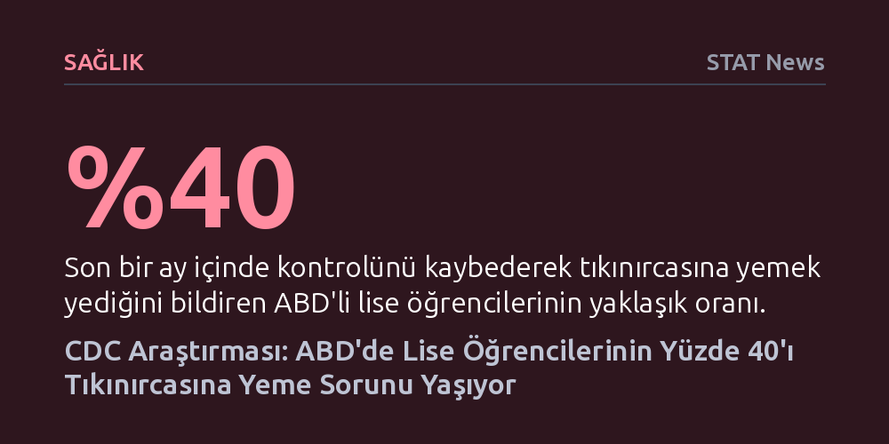

SAGLIK · STAT News · 2026-10-16
CDC'nin yeni araştırmasına göre ABD'deki lise öğrencilerinin yaklaşık yüzde 40'ı son bir ayda tıkınırcasına yeme nöbeti geçirdiğini bildiriyor. Veriler, bu yeme bozukluğunun beyaz gençlerden ziyade etnik azınlıklarda ve marjinalleştirilmiş gruplarda belirgin biçimde daha yaygın olduğunu gösteriyor.
Yeme bozukluklarının yalnızca varlıklı beyaz kızlara özgü olduğu yönündeki kalıp yargıyı yıkarak, krizin azınlık gençlerini ve ruh sağlığı kırılgan kitleleri çok daha sert vurduğunu kanıtlıyor.

ABD Hastalık Kontrol ve Önleme Merkezleri'nin (CDC) iki yılda bir yürüttüğü ulusal araştırma, lise çağındaki gençler arasında yeme bozukluklarının tahminlerin çok ötesinde bir boyuta ulaştığını ortaya koydu. Araştırmaya göre Amerikalı lise öğrencilerinin yaklaşık yüzde 40'ı, son bir ay içinde en az bir kez tıkınırcasına yeme atağı yaşadığını bildirdi. Elde edilen veriler, kontrolsüz yeme davranışının gençler arasında ne denli yaygın ve kronikleşmiş bir halk sağlığı meselesi haline geldiğini tartışmasız biçimde belgeliyor.
Tablonun ciddiyeti, yakın zamanlı veriler incelendiğinde daha da belirginleşiyor. Ankete katılan yaklaşık 7 bin öğrencinin yüzde 17'si, araştırmadan önceki son üç gün içinde bile tıkınırcasına yeme nöbeti geçirdiğini ifade etti. Boston Çocuk Hastanesi Ergen ve Çocuk Sağlığı Bölümü'nden araştırmacı Ariel Beccia, verilerin ulaştığı seviyenin son derece kaygı verici olduğunu ve klinik açıdan acil müdahale gerektiren bir krizle karşı karşıya olunduğunu belirtiyor.
Araştırma, tıkınırcasına yemeyi yalnızca aşırı miktarda besin tüketmek olarak tanımlamıyor; tanımdaki asıl belirleyici kriter kişinin iradesini yitirmesi. Gençlere, son 30 gün içinde olağandışı miktarda yiyeceği kısa bir sürede tüketirken kontrolü kaybetme veya doyduklarını hissettikleri halde yemeyi durduramama hissi yaşayıp yaşamadıkları soruldu. Sonuçlar, gençlerin önemli bir bölümünün doyma sinyallerini bastıran ve çaresizlik hissi yaratan ağır bir dürtüsellikle mücadele ettiğini gösteriyor.
CDC'nin yayımladığı bu sonuçlar, federal düzeyde son on yılda yeme bozukluklarına dair toplanan ilk resmi veriler olma özelliğini taşıyor. Zira kurum, 2015 yılında Gençlik Risk Davranışları Araştırması'ndan yeme bozukluklarına ilişkin tüm soruları çıkarmıştı. O dönemde gençler arasında hızla tırmanan elektronik sigara salgınını izlemek isteyen yetkililer, yeni anket maddelerine yer açabilmek adına yeme davranışlarını gözlemlemeyi durdurmuştu.
Araştırmanın bir ders saatine, yani azami 45 dakikaya sığacak biçimde kurgulanması, anket formundaki her soru için kıyasıya bir alan rekabeti yaratıyor. Yeme bozuklukları alanında çalışan araştırmacılar ve sivil toplum kuruluşları ise gençlerin beslenme krizinin görünmez kılınmasına karşı tam on yıl boyunca kararlı bir mücadele yürüttü. Tıkınırcasına yeme sorusunun nihayet ankete yeniden dahil edilmesi, bu uzun ve ısrarlı savunuculuk çabasının kritik bir kazanımı sayılıyor.
Buna karşın uzmanlar, atılan adımın henüz yeterli olmadığı görüşünde birleşiyor. Savunucu gruplar, gelecek araştırmalarda kontrolsüz yemenin yanı sıra aç kalma, aşırı kısıtlayıcı diyetler uygulama ve yediklerini kusarak çıkarma gibi tehlikeli davranışların da ana ankete eklenmesini talep ediyor. Bu tür telafi edici ve kısıtlayıcı eylemleri ölçen sorular, şimdilik yalnızca eyaletlerin ve yerel yönetimlerin isteğine bağlı bir havuzda tutuluyor.
Araştırmanın en sarsıcı çıkarımlarından biri, kamuoyuna ve popüler kültüre yerleşmiş olan yeme bozukluğu algısını temelden çürütmesi oldu. On yıllardır yeme bozukluklarının neredeyse tamamen varlıklı, beyaz genç kızların yaşadığı bir problem olduğu varsayılıyordu. Oysa CDC'nin taze verileri, tablonun tam tersi bir dağılım sergilediğini kanıtlıyor. Kız öğrenciler erkeklere kıyasla daha yüksek bir oran bildirse de (%19'a karşılık %16), asıl uçurum etnik ve sosyoekonomik arka planda beliriyor.
Son üç günde tıkınırcasına yeme atağı bildirenlerin oranı Hispanik (%20), çok ırklı (%20) ve Siyah (%19) öğrenciler arasında, beyaz öğrencilere (%15) kıyasla belirgin derecede yüksek seyrediyor. Orta Doğu ve Kuzey Afrika kökenli gençlerde ise bu oran yüzde 10 seviyesinde kalıyor. Ariel Beccia bu bulguların tarihi önemine dikkat çekerek, yeme bozukluklarının herkesi etkilediğini fakat "aslında marjinalleştirilmiş gençleri daha fazla vuruyor" gerçeğini artık tıbbın kabul etmesi gerektiğini vurguluyor.
Araştırmada göze çarpan bir diğer çarpıcı korelasyon ise dijital alışkanlıklar ve ruh sağlığı zemininde şekilleniyor. Sosyal medya platformlarını saatte en az bir kez kontrol eden, psikolojik dayanıklılığı çökmüş ve intihar eğilimi taşıyan gençlerde tıkınırcasına yeme oranları katlanarak artıyor. Bu bağlantı, tıkınırcasına yemenin bir iştah ya da disiplin sorunu değil, gençlerin derin duygusal acı ve çaresizlikle başa çıkmak için başvurduğu sağlıksız bir sığınak olduğunu gösteriyor.
Araştırmanın düşündürdüğü temel sorulardan biri, bu kitlesel kontrol kaybını neyin tetiklediği. Aşırı işlenmiş gıdalar ve bağımlılık alanında çalışan araştırmacı Ashley Gearhardt, tıkınırcasına yemenin tıpta klinik bir bozukluk olarak tanımlanmaya başladığı dönemin, endüstriyel olarak aşırı işlenmiş gıdaların pazar hakimiyeti kurduğu dönemle birebir örtüştüğünü hatırlatıyor. Rafine şeker, tuz ve yağ kombinasyonlarıyla beynin ödül merkezini ele geçiren bu ürünler, biyolojik durdurma mekanizmalarını devre dışı bırakabiliyor.
Bununla birlikte Gearhardt, zamansal bu çakışmanın kesin bir neden-sonuç ilişkisi kanıtlamadığı konusunda temkinli olunması gerektiğini belirtiyor. Şayet sorun yalnızca endüstriyel gıdaların kimyasal yapısından kaynaklansaydı, aynı gıdalara maruz kalan herkesin benzer düzeyde bağımlılık ve kontrol kaybı yaşaması gerekirdi. Oysa veriler, belirli kırılganlık gruplarının ve travmaya açık gençlerin bu tuzağa çok daha kolay düştüğünü gösteriyor.
Araştırmacı Ariel Beccia da meselenin özünde yatan gerçeğin bir gıda sorunu değil, doğrudan bir ruh sağlığı krizi olduğunun altını çiziyor. Sosyal baskı, ayrımcılık, yoksulluk ve gıda güvencesizliği gibi stres faktörleri ergenlerin zihninde derin yaralar açtığında, yemek tüketimi geçici bir rahatlama aracına dönüşüyor. Dolayısıyla uzmanlar, çözümü yalnızca bireysel diyet tavsiyelerinde değil; gençlerin psikolojik destek altyapısını güçlendirmekte ve azınlık topluluklarını kuşatan yapısal eşitsizlikleri gidermekte arıyor.